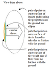

camber_force

Definition: Camber thrust and camber force are terms used to describe the force generated perpendicular to the direction of travel of a rolling tire due to its camber angle and finite contact patch. Camber thrust is generated when a point on the outer surface of a leaned and rotating tire, that would normally follow a path that is elliptical when projected onto the ground, is forced to follow a straight path while coming in contact with the ground, due to friction. This deviation towards the direction of the lean causes a deformation in the tire tread and carcass that is transmitted to the vehicle as a force in the direction of the lean.
Source: Wikipedia
Wikipedia Page (Something wrong with this association? Let us know.)
Wikidata Page (Something wrong with this association? Let us know.)
Occurs in: